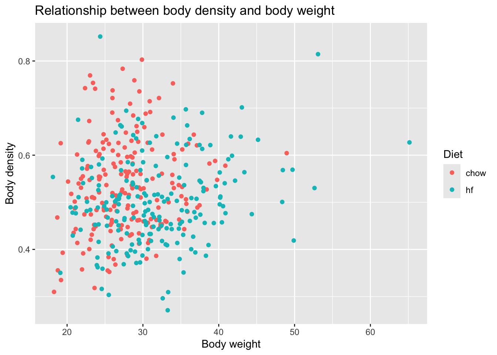

── Conflicts ────────────────────────────────────────── tidyverse_conflicts() ──
✖ dplyr::filter() masks stats::filter()
✖ dplyr::lag() masks stats::lag()
ℹ Use the conflicted package (<http://conflicted.r-lib.org/>) to force all conflicts to become errors
I will now use the “help()” function on the “gapminder” data.
help(gapminder)
From this, I learned that the gapminder data contains outcomes related to health and income for 184 countries between 1960 and 2016. oecd = OECD countries from 2016 opec = OPEC countries form 2016
Now, I will use str() on the gapminder data.
str(gapminder)
'data.frame': 10545 obs. of 9 variables:
$ country : Factor w/ 185 levels "Albania","Algeria",..: 1 2 3 4 5 6 7 8 9 10 ...
$ year : int 1960 1960 1960 1960 1960 1960 1960 1960 1960 1960 ...
$ infant_mortality: num 115.4 148.2 208 NA 59.9 ...
$ life_expectancy : num 62.9 47.5 36 63 65.4 ...
$ fertility : num 6.19 7.65 7.32 4.43 3.11 4.55 4.82 3.45 2.7 5.57 ...
$ population : num 1636054 11124892 5270844 54681 20619075 ...
$ gdp : num NA 1.38e+10 NA NA 1.08e+11 ...
$ continent : Factor w/ 5 levels "Africa","Americas",..: 4 1 1 2 2 3 2 5 4 3 ...
$ region : Factor w/ 22 levels "Australia and New Zealand",..: 19 11 10 2 15 21 2 1 22 21 ...
Above, I can see that the gapminder data frame contains 9 variables and 10,545 observations. The variables are: country, year, infant_mortality, life_expectancy, fertility, population, gdp, continent, and region. Some of the variables are numerics or intergers, while others are factors (country, continent, and region).
I will use summary() on the gapminder data.
summary(gapminder)
country year infant_mortality life_expectancy
Albania : 57 Min. :1960 Min. : 1.50 Min. :13.20
Algeria : 57 1st Qu.:1974 1st Qu.: 16.00 1st Qu.:57.50
Angola : 57 Median :1988 Median : 41.50 Median :67.54
Antigua and Barbuda: 57 Mean :1988 Mean : 55.31 Mean :64.81
Argentina : 57 3rd Qu.:2002 3rd Qu.: 85.10 3rd Qu.:73.00
Armenia : 57 Max. :2016 Max. :276.90 Max. :83.90
(Other) :10203 NA's :1453
fertility population gdp continent
Min. :0.840 Min. :3.124e+04 Min. :4.040e+07 Africa :2907
1st Qu.:2.200 1st Qu.:1.333e+06 1st Qu.:1.846e+09 Americas:2052
Median :3.750 Median :5.009e+06 Median :7.794e+09 Asia :2679
Mean :4.084 Mean :2.701e+07 Mean :1.480e+11 Europe :2223
3rd Qu.:6.000 3rd Qu.:1.523e+07 3rd Qu.:5.540e+10 Oceania : 684
Max. :9.220 Max. :1.376e+09 Max. :1.174e+13
NA's :187 NA's :185 NA's :2972
region
Western Asia :1026
Eastern Africa : 912
Western Africa : 912
Caribbean : 741
South America : 684
Southern Europe: 684
(Other) :5586
The summary above displays the countries, continents, and regions. It also shows the minimum, 1st quartile, median, mean, 3rd quartile and maximum values for the numeric/integer variables.
Now, I will determine the type of object/class that gapminder is.
class(gapminder)
[1] "data.frame"
This output states that gapminder is a data frame.
Processing Data
Now, I will filter the gapminder data to obtain only the countries in Africa. I will assign this to a variable called “africadata”.
'data.frame': 2907 obs. of 9 variables:
$ country : Factor w/ 185 levels "Albania","Algeria",..: 2 3 18 22 26 27 29 31 32 33 ...
$ year : int 1960 1960 1960 1960 1960 1960 1960 1960 1960 1960 ...
$ infant_mortality: num 148 208 187 116 161 ...
$ life_expectancy : num 47.5 36 38.3 50.3 35.2 ...
$ fertility : num 7.65 7.32 6.28 6.62 6.29 6.95 5.65 6.89 5.84 6.25 ...
$ population : num 11124892 5270844 2431620 524029 4829291 ...
$ gdp : num 1.38e+10 NA 6.22e+08 1.24e+08 5.97e+08 ...
$ continent : Factor w/ 5 levels "Africa","Americas",..: 1 1 1 1 1 1 1 1 1 1 ...
$ region : Factor w/ 22 levels "Australia and New Zealand",..: 11 10 20 17 20 5 10 20 10 10 ...
As you can see, there are still 9 variables (each of the same data class as before). However, there are fewer observations (2907) than before (10,545) - because we are only included the African countries here.
I will run summary() on “africadata”.
summary(africadata)
country year infant_mortality life_expectancy
Algeria : 57 Min. :1960 Min. : 11.40 Min. :13.20
Angola : 57 1st Qu.:1974 1st Qu.: 62.20 1st Qu.:48.23
Benin : 57 Median :1988 Median : 93.40 Median :53.98
Botswana : 57 Mean :1988 Mean : 95.12 Mean :54.38
Burkina Faso: 57 3rd Qu.:2002 3rd Qu.:124.70 3rd Qu.:60.10
Burundi : 57 Max. :2016 Max. :237.40 Max. :77.60
(Other) :2565 NA's :226
fertility population gdp continent
Min. :1.500 Min. : 41538 Min. :4.659e+07 Africa :2907
1st Qu.:5.160 1st Qu.: 1605232 1st Qu.:8.373e+08 Americas: 0
Median :6.160 Median : 5570982 Median :2.448e+09 Asia : 0
Mean :5.851 Mean : 12235961 Mean :9.346e+09 Europe : 0
3rd Qu.:6.860 3rd Qu.: 13888152 3rd Qu.:6.552e+09 Oceania : 0
Max. :8.450 Max. :182201962 Max. :1.935e+11
NA's :51 NA's :51 NA's :637
region
Eastern Africa :912
Western Africa :912
Middle Africa :456
Northern Africa :342
Southern Africa :285
Australia and New Zealand: 0
(Other) : 0
This summary is similar to the one created for the entire gapminder data frame, however the values above are now different for the numeric/integer variables since we are only looking at the African countries.
Now, I will create a new object that contains only the infant_mortality AND life_expectancy from the “africadata” data frame.
I will use str() and summary() to take a look at the infantmort_lifeexp data.
str(infantmort_lifeexp)
'data.frame': 2907 obs. of 2 variables:
$ infant_mortality: num 148 208 187 116 161 ...
$ life_expectancy : num 47.5 36 38.3 50.3 35.2 ...
summary(infantmort_lifeexp)
infant_mortality life_expectancy
Min. : 11.40 Min. :13.20
1st Qu.: 62.20 1st Qu.:48.23
Median : 93.40 Median :53.98
Mean : 95.12 Mean :54.38
3rd Qu.:124.70 3rd Qu.:60.10
Max. :237.40 Max. :77.60
NA's :226
These outputs show that the only two variables are infant_mortality and life_expectancy. Then the minimum, 1st quartile, median, mean, 3rd quartile, and maximum are displayed for infant_mortality and life_expectancy.
Then, I will create a new object containing only population AND life-expectancy from the “africadata” data frame.
I will use str() and summary() to take a look at the pop_lifeexp data.
str(pop_lifeexp)
'data.frame': 2907 obs. of 2 variables:
$ population : num 11124892 5270844 2431620 524029 4829291 ...
$ life_expectancy: num 47.5 36 38.3 50.3 35.2 ...
summary(pop_lifeexp)
population life_expectancy
Min. : 41538 Min. :13.20
1st Qu.: 1605232 1st Qu.:48.23
Median : 5570982 Median :53.98
Mean : 12235961 Mean :54.38
3rd Qu.: 13888152 3rd Qu.:60.10
Max. :182201962 Max. :77.60
NA's :51
These outputs show that the only two variables are population and life_expectancy. Then the minimum, 1st quartile, median, mean, 3rd quartile, and maximum are displayed for population and life_expectancy.
Plotting
I will now create a plot of life_expectancy as a function of infant_mortality.
ggplot(infantmort_lifeexp, aes(x = infant_mortality, y = life_expectancy)) +geom_point(color ="#5fafdc") +# I will specify the points to be blue labs(title ="Life Expectancy as a Function of Infant \n Mortality in African Countries",x ="Infant Mortality (per 1,000)",y ="Life Expectancy (years)") +# I will specify the title and the names of the x and y axes theme(legend.position ="none", plot.title =element_text(size =18, face ="bold", hjust =0.5), axis.title.x =element_text(size =12, face ="bold"), axis.title.y =element_text(size =12, face ="bold")) # I will remove a legend (since it is unneeded here) and make the title and axis labels larger and bold
Warning: Removed 226 rows containing missing values or values outside the scale range
(`geom_point()`).
As you can see from the plot above, there appears to be a negative relationship between infant mortality and life expectancy. This makes sense, because if there is higher infant mortality in a country, their overall life expectancy should be lower.
I will now create a plot of life_expectancy as a function of population (size). The population (x-axis) will be set to a log scale.
ggplot(pop_lifeexp, aes(x = population, y = life_expectancy)) +geom_point(color ="#70dc5f") +# I will specify the points to be green scale_x_log10() + scale_x_log10() +# I will set the x-axis to a log scalelabs(title ="Life Expectancy as a Function of Population Size \n (Log Scale) in African Countries",x ="Population (Log Scale)",y ="Life Expectancy (years)") +# I will specify the title and the names of the x and y axestheme(legend.position ="none", plot.title =element_text(size =18, face ="bold", hjust =0.5), axis.title.x =element_text(size =12, face ="bold"), axis.title.y =element_text(size =12, face ="bold")) # I will remove a legend (since it is unneeded here) and make the title and axis labels larger and bold
Warning: Removed 51 rows containing missing values or values outside the scale range
(`geom_point()`).
The plot above appears to have individual streaks which have a positive relationship between population size and life expectancy. However, as a whole the data appears to be relatively scattered.
There appear to be “streaks” of data in both plots above. This is because we are measuring individual countries over several different years.
More Data Processing
I will find out which years contain NAs.
years_with_na_infant_mortality <-unique(africadata$year[is.na(africadata$infant_mortality)])# use unique() and is.na() to find out which years contain NAs in infant_mortalityprint(years_with_na_infant_mortality)
As you can see, the years 1960-1981 and 2016 contain NA values within the infant_mortality variable.
We will use the year 2000’s infant mortality data since it contains no missing values. I will create a new object that contains only data for the year 2000 from the “africadata” data frame.
africadata_2000 <-filter(africadata, year ==2000)
I will check that this worked with str() and summary().
str(africadata_2000)
'data.frame': 51 obs. of 9 variables:
$ country : Factor w/ 185 levels "Albania","Algeria",..: 2 3 18 22 26 27 29 31 32 33 ...
$ year : int 2000 2000 2000 2000 2000 2000 2000 2000 2000 2000 ...
$ infant_mortality: num 33.9 128.3 89.3 52.4 96.2 ...
$ life_expectancy : num 73.3 52.3 57.2 47.6 52.6 46.7 54.3 68.4 45.3 51.5 ...
$ fertility : num 2.51 6.84 5.98 3.41 6.59 7.06 5.62 3.7 5.45 7.35 ...
$ population : num 31183658 15058638 6949366 1736579 11607944 ...
$ gdp : num 5.48e+10 9.13e+09 2.25e+09 5.63e+09 2.61e+09 ...
$ continent : Factor w/ 5 levels "Africa","Americas",..: 1 1 1 1 1 1 1 1 1 1 ...
$ region : Factor w/ 22 levels "Australia and New Zealand",..: 11 10 20 17 20 5 10 20 10 10 ...
summary(africadata_2000)
country year infant_mortality life_expectancy
Algeria : 1 Min. :2000 Min. : 12.30 Min. :37.60
Angola : 1 1st Qu.:2000 1st Qu.: 60.80 1st Qu.:51.75
Benin : 1 Median :2000 Median : 80.30 Median :54.30
Botswana : 1 Mean :2000 Mean : 78.93 Mean :56.36
Burkina Faso: 1 3rd Qu.:2000 3rd Qu.:103.30 3rd Qu.:60.00
Burundi : 1 Max. :2000 Max. :143.30 Max. :75.00
(Other) :45
fertility population gdp continent
Min. :1.990 Min. : 81154 Min. :2.019e+08 Africa :51
1st Qu.:4.150 1st Qu.: 2304687 1st Qu.:1.274e+09 Americas: 0
Median :5.550 Median : 8799165 Median :3.238e+09 Asia : 0
Mean :5.156 Mean : 15659800 Mean :1.155e+10 Europe : 0
3rd Qu.:5.960 3rd Qu.: 17391242 3rd Qu.:8.654e+09 Oceania : 0
Max. :7.730 Max. :122876723 Max. :1.329e+11
region
Eastern Africa :16
Western Africa :16
Middle Africa : 8
Northern Africa : 6
Southern Africa : 5
Australia and New Zealand: 0
(Other) : 0
This worked, as you can see all the years appear as “2000”.
More Plotting
I will make the same plots as before, but this time with the “africadata_2000” data.
I will create a plot of life_expectancy as a function of infant_mortality.
ggplot(africadata_2000, aes(x = infant_mortality, y = life_expectancy)) +geom_point(color ="#f576c1") +# I will specify the points to be pink labs(title ="Life Expectancy as a Function of Infant Mortality \n in African Countries in Year 2000",x ="Infant Mortality (per 1,000)",y ="Life Expectancy (years)") +# I will specify the title and the names of the x and y axes theme(legend.position ="none", plot.title =element_text(size =18, face ="bold", hjust =0.5), axis.title.x =element_text(size =12, face ="bold"), axis.title.y =element_text(size =12, face ="bold")) # I will remove a legend (since it is unneeded here) and make the title and axis labels larger and bold
You can see that the plot above has fewer data points that the previous plot because only data from the year 2000 for each country is included.
I will now create a plot of life_expectancy as a function of population (size). The population (x-axis) will be set to a log scale.
ggplot(africadata_2000, aes(x = population, y = life_expectancy)) +geom_point(color ="#f7af32") +# I will specify the points to be orange scale_x_log10() +# I will set the x-axis to a log scalelabs(title ="Life Expectancy as a Function of Population Size \n (Log Scale) in African Countries in Year 2000",x ="Population (Log Scale)",y ="Life Expectancy (years)") +# I will specify the title and the names of the x and y axestheme(legend.position ="none", plot.title =element_text(size =18, face ="bold", hjust =0.5), axis.title.x =element_text(size =12, face ="bold"), axis.title.y =element_text(size =12, face ="bold")) # I will remove a legend (since it is unneeded here) and make the title and axis labels larger and bold
The plot above also has fewer data points than the previous plot because it contain contains a data point from the year 2000 for each country.
Simple Model Fits
I will now use the lm() function to fit a linear model with life_expectancy as the outcome and infant_mortality as the predictor. Then, I will apply the summary() function.
fit1 <-lm(life_expectancy ~ infant_mortality, data = africadata_2000)summary(fit1)
Call:
lm(formula = life_expectancy ~ infant_mortality, data = africadata_2000)
Residuals:
Min 1Q Median 3Q Max
-22.6651 -3.7087 0.9914 4.0408 8.6817
Coefficients:
Estimate Std. Error t value Pr(>|t|)
(Intercept) 71.29331 2.42611 29.386 < 2e-16 ***
infant_mortality -0.18916 0.02869 -6.594 2.83e-08 ***
---
Signif. codes: 0 '***' 0.001 '**' 0.01 '*' 0.05 '.' 0.1 ' ' 1
Residual standard error: 6.221 on 49 degrees of freedom
Multiple R-squared: 0.4701, Adjusted R-squared: 0.4593
F-statistic: 43.48 on 1 and 49 DF, p-value: 2.826e-08
The intercept (a) is 71.29331; this means that the average life expectancy is 71.29331 years when infant mortality is 0. The slope (b) is -0.18916; this means that for every 1 unit increase in infant mortality, life expectancy decreases by 0.18916 years.
I will now use the lm() function to fit a linear model with life_expectancy as the outcome and population size as the predictor. Then, I will apply the summary() function.
fit2 <-lm(life_expectancy ~ population, data = africadata_2000)summary(fit2)
Call:
lm(formula = life_expectancy ~ population, data = africadata_2000)
Residuals:
Min 1Q Median 3Q Max
-18.429 -4.602 -2.568 3.800 18.802
Coefficients:
Estimate Std. Error t value Pr(>|t|)
(Intercept) 5.593e+01 1.468e+00 38.097 <2e-16 ***
population 2.756e-08 5.459e-08 0.505 0.616
---
Signif. codes: 0 '***' 0.001 '**' 0.01 '*' 0.05 '.' 0.1 ' ' 1
Residual standard error: 8.524 on 49 degrees of freedom
Multiple R-squared: 0.005176, Adjusted R-squared: -0.01513
F-statistic: 0.2549 on 1 and 49 DF, p-value: 0.6159
The intercept (a) is 5.593e+01; this means that the average life expectancy is 55.93 years when the population size is equal to 0. The slope (b) is 2.756e-08; this means that for every 1 unit increase in population size, life expectancy increases by 2.756e-08 years. This intrepretation does not make sense - because if the population size is 0, the average life expectancy should be non-existent.
The p-value for “fit1” is 2.826e-08, while the p-value for “fit2” is 0.6159. 2.825e-08 is less than 0.05, therefore, the null hypothesis that there is no relationship between infant mortality and life expectancy can be rejected. 0.6159 is greater than 0.05, the null hypothesis that there is no relationship between population size and life expectancy cannot be rejected (we fail to reject). With this information, it can be said that infant mortality is a better predictor of life expectancy than population size. Therefore, “fit1” should be used.
Part 2
This section is contributed by Yufei Wu.
Dataset exploration
I choose the dataset “mice_weights” which contains body weights, bone density, and percent fat for mice under two diets: chow and high fat.
# load packagelibrary(dslabs)#look at help file for mice_weights datahelp(mice_weights)#get an overview of data structurestr(mice_weights)
body_weight bone_density percent_fat sex diet gen
Min. :18.13 Min. :0.2708 Min. : 2.766 F:398 chow:200 4 : 50
1st Qu.:25.35 1st Qu.:0.4531 1st Qu.: 5.690 M: 0 hf :198 7 : 98
Median :28.71 Median :0.5090 Median : 8.181 8 :100
Mean :29.76 Mean :0.5186 Mean : 8.683 9 : 50
3rd Qu.:33.21 3rd Qu.:0.5793 3rd Qu.:11.017 11:100
Max. :65.15 Max. :0.8519 Max. :22.154
NA's :1 NA's :1
litter
1:224
2:174
#get the overview of the datahead(femalerat)
body_weight bone_density percent_fat sex diet gen litter
1 27.60 0.6163850 7.255468 F chow 4 1
2 23.03 0.7693496 4.951037 F chow 4 1
3 28.72 0.6842564 6.020849 F chow 4 1
4 32.57 0.6436947 9.536251 F chow 4 1
5 28.61 0.5297713 6.987331 F chow 4 1
6 28.16 0.5649217 6.767774 F chow 4 1
Figures and tables
#load packagelibrary(ggplot2)library(dplyr)#make plots of body weight vs body density, coloring by dietggplot(femalerat, aes(x = body_weight, y = bone_density, color = diet)) +geom_point() +labs(title ="Relationship between body density and body weight",x ="Body weight",y ="Body density",color ="Diet")

#make plots of body weight vs percent fat, coloring by dietggplot(femalerat, aes(x = body_weight, y = percent_fat, color = diet)) +geom_point() +labs(title ="Relationship between percent fat and body weight",x ="Body weight",y ="Percent fat",color ="Diet")
#summarize the mean and standard deviation of body weight grouped by dietsummary_table <- femalerat %>%group_by(diet) %>%summarise(mean_weight =mean(body_weight, na.rm =TRUE),sd_weight =sd(body_weight, na.rm =TRUE),mean_percent_fat =mean(percent_fat, na.rm =TRUE),sd_percent_fat =sd(percent_fat, na.rm =TRUE),count =n() )print(summary_table)
From the first figure, we cannot see a clear relationship between body density and body weight. From the second figure, we can see that there is a positive relationship between percent fat and body weight. Besides, there are more points from high fat group locating in higher percent fat. From the table, we can see that the body weight and percent fat are both higher in the high fat group than chow group, which can be further explored.
Statistical model
Since I noticed that body weight and percent fat are both higher in the high fat group than chow group, I will test if the differences are statistically significant.
#run t-test for body weight comparisont_test_weight <-t.test(body_weight ~ diet, data = femalerat)print(t_test_weight)
Welch Two Sample t-test
data: body_weight by diet
t = -6.3936, df = 347.4, p-value = 5.224e-10
alternative hypothesis: true difference in means between group chow and group hf is not equal to 0
95 percent confidence interval:
-5.073552 -2.686420
sample estimates:
mean in group chow mean in group hf
27.82860 31.70859
#run t-test for percent fat comparisont_test_fat <-t.test(percent_fat ~ diet, data = femalerat)print(t_test_fat)
Welch Two Sample t-test
data: percent_fat by diet
t = -11.316, df = 349.56, p-value < 2.2e-16
alternative hypothesis: true difference in means between group chow and group hf is not equal to 0
95 percent confidence interval:
-4.310618 -3.034073
sample estimates:
mean in group chow mean in group hf
6.860235 10.532581
Report the results
For the body weight comparison, the difference between high fat group and chow group is 3.88, p value is less than 0.05, so the mean body weight differs significantly between the high Fat and chow groups. For the percent fat comparison, the difference between high fat group and chow group is 3.67, p value is less than 0.05, so the mean percent fat differs significantly between the high Fat and chow groups.